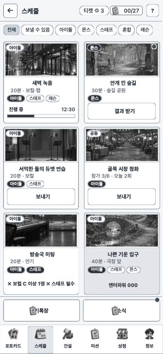
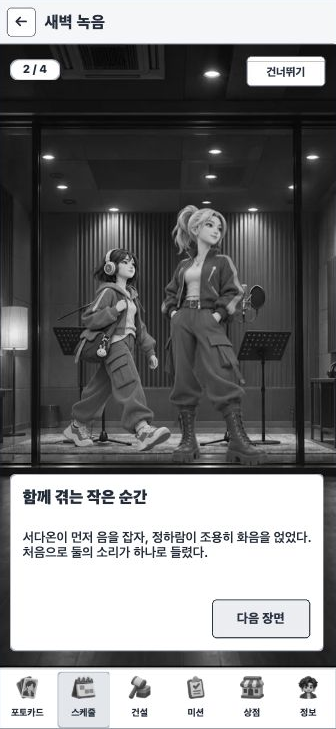
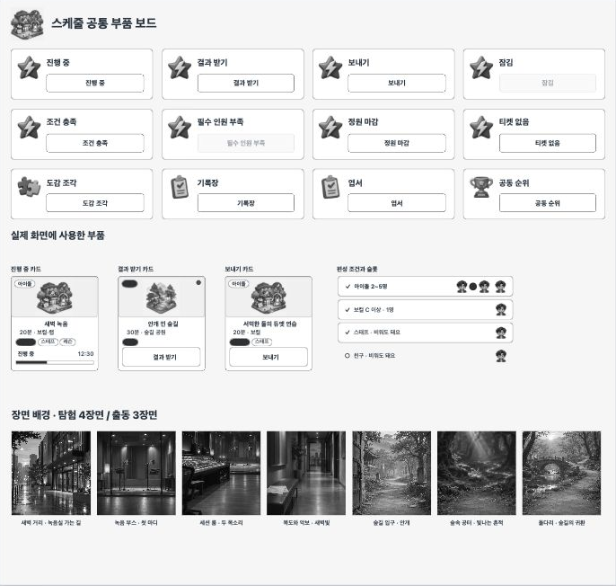

장면 배경과 연출
목록과 편성에서는 장소가 카드의 배경입니다. 진행 중에는 이동하는 몬스, 이야기에서는 장면 배경과 인물, 하단 대사가 각각 편집 가능합니다. 탐험 4장면과 출동 3장면의 순서대로 배경이 바뀝니다. 출동 편성의 공격 미리보기에는 준비, 기술 발동, 결과를 한 화면에 배치했습니다. 인물과 몬스는 검수용 3D풍 이미지 레이어이며 실제 3D 모델과 애니메이션은 게임에서 연결합니다.


케이팝몬스터즈 · 7018 저장판 r6 · 390 × 844
홈의 스케줄 카드에서 편성 또는 진행, 이야기와 결과로 이어집니다. 도감·기록장·소식은 공통 팝업을 씁니다.


목록과 편성에서는 장소가 카드의 배경입니다. 진행 중에는 이동하는 몬스, 이야기에서는 장면 배경과 인물, 하단 대사가 각각 편집 가능합니다. 탐험 4장면과 출동 3장면의 순서대로 배경이 바뀝니다. 출동 편성의 공격 미리보기에는 준비, 기술 발동, 결과를 한 화면에 배치했습니다. 인물과 몬스는 검수용 3D풍 이미지 레이어이며 실제 3D 모델과 애니메이션은 게임에서 연결합니다.
캔버스에서 각 기능 행의 왼쪽에서 시작해 상세와 상태를 확인합니다.
| 화면·ID | 입력과 목적지 | 표시 기준 |
|---|---|---|
① 스케줄 홈 · 한 목록home | 📖 00/27 → Ⓐ 도감 · 기념 (창 · 홈 📖) 새벽 녹음 → ③ 진행 중 (진행 중 카드를 누르면) 안개 낀 숲길 → 출동 · 이야기 1/3 · 안개 속의 입구 서먹한 둘의 듀엣 연습 → ② 보내기 · 아이돌 (탐험) 골목 시장 정화 → ② 출동 · 몬스 · 같은 틀 기록장 → Ⓒ 내 기록장 (창 · 홈 아래) · 내 엽서 담벼락 소식 → Ⓓ 소식 (창 · 홈 아래) · 받은 편지 + 친구 엽서 | 1티켓 · 하루 3장 · 최대 10 · 아이돌 · 몬스 같은 티켓 · 0장이면 숫자가 빨간 글자, 보내기 버튼이 「스케줄 티켓이 없어요 · 내일 3장 충전」으로 꺼짐 |
② 보내기 · 아이돌 (탐험)dispatch-idol | 이야기 ✎ → Ⓑ 이야기 바꾸기 (창 · ② 「바꾸기」) 보내기 → ③ 진행 중 (진행 중 카드를 누르면) | 1대표 이미지 · 위에 종류 · 시간 · 이야기 바꾸기 · 아래에 받을 보상 |
② 출동 · 몬스 · 같은 틀dispatch-mons | 공격 연출 보기 → 출동 · 공격 연출 미리보기 출동하기 → 출동 · 진행 중 | 1대표 이미지 · 위에 종류 · 시간 · 아래에 받을 보상 · 위 버튼 공격 연출 보기 |
출동 · 공격 연출 미리보기mons-attack | 편성으로 → 호출 화면 | 편성 화면에서 열어 몬스의 준비, 발동, 결과 순서를 확인합니다. 공격 동작은 실제 3D 애니메이션 연동 시 교체합니다. |
②-2 경우별로 바뀌는 줄 (같은 틀 · 예시 모음)dispatch-requirements | 1레슨 · 아이돌 1명만 보내면 개인 레슨 · 그 아이돌의 해당 세부 능력이 오름 · 2명 이상이면 보통 스케줄 | |
Ⓑ 이야기 바꾸기 (창 · ② 「바꾸기」)story-edit | 닫기 → 호출 화면 이대로 → 호출 화면 | 1주제 · 행동 · 관계 대상(두 아이돌일 때만) · 누르면 고르기 |
③ 진행 중 (진행 중 카드를 누르면)running | 목록으로 → ① 스케줄 홈 · 한 목록 완료 후 이야기 보기 → 탐험 · 이야기 1/4 · 새벽에 만난 두 사람 | 1장면 · 보낸 팀이 걷는 모습(탐험은 아이돌 분신 몬스 · 출동은 몬스) |
탐험 · 이야기 1/4 · 새벽에 만난 두 사람story | 건너뛰고 결과 보기 → ④ 결과 · 한 장 (이야기 다음) 다음 장면 → 탐험 · 이야기 2/4 · 함께 겪는 작은 순간 | 새벽 녹음의 1장면. 배경·인물 레이어·대사와 다음 조작을 분리한 연출 예시. |
탐험 · 이야기 2/4 · 함께 겪는 작은 순간story-idol-2 | 건너뛰고 결과 보기 → ④ 결과 · 한 장 (이야기 다음) 다음 장면 → 탐험 · 이야기 3/4 · 화음을 완성하는 순간 | 새벽 녹음의 2장면. 배경·인물 레이어·대사와 다음 조작을 분리한 연출 예시. |
탐험 · 이야기 3/4 · 화음을 완성하는 순간story-idol-3 | 건너뛰고 결과 보기 → ④ 결과 · 한 장 (이야기 다음) 다음 장면 → 탐험 · 이야기 4/4 · 돌아가는 길 | 새벽 녹음의 3장면. 배경·인물 레이어·대사와 다음 조작을 분리한 연출 예시. |
탐험 · 이야기 4/4 · 돌아가는 길story-idol-4 | 건너뛰고 결과 보기 → ④ 결과 · 한 장 (이야기 다음) 결과 보기 → ④ 결과 · 한 장 (이야기 다음) | 새벽 녹음의 4장면. 배경·인물 레이어·대사와 다음 조작을 분리한 연출 예시. |
④ 결과 · 한 장 (이야기 다음)result | 열기 → ④-2 아이템 이야기 (이야기 카드를 발견했을 때만 · 받기 다음) 공동 순위 보기 › → ④-3 공동 순위 (창 · 결과 「공동 순위 보기」) 받기 → ① 스케줄 홈 · 한 목록 | 1대표 이미지 위에 도착 문구(탐험 「잘 다녀왔어요!」 · 출동 「씩씩하게 다녀왔어요!」) · ★ · 결과 등급 · 보상 % · 등급 4가지: 완벽 ★3 100% · 좋음 ★2 100% · 부분 ★1 50% · 실패 0%(④-1) |
④-1 결과 · 아쉬울 때 (부분 ★1 / 실패)result-low | 확인 → ① 스케줄 홈 · 한 목록 | 1부분 ★1 · 보상 절반 |
④-2 아이템 이야기 (이야기 카드를 발견했을 때만 · 받기 다음)item-story | 건너뛰기 › → ④ 결과 · 한 장 (이야기 다음) 확인 → ④ 결과 · 한 장 (이야기 다음) | 1카드 인물 그림 · 발견한 이야기 카드의 아이돌 |
④-3 공동 순위 (창 · 결과 「공동 순위 보기」)ranking | 닫기 → 호출 화면 | 1순위 줄 · 순위 · 얼굴 · 기획사 이름 · 기여도 막대 · 아래로 밀어 더 보기 |
출동 · 진행 중running-mons | 목록으로 → ① 스케줄 홈 · 한 목록 완료 후 이야기 보기 → 출동 · 이야기 1/3 · 안개 속의 입구 | 1장면 · 보낸 팀이 걷는 모습(탐험은 아이돌 분신 몬스 · 출동은 몬스) |
출동 · 이야기 1/3 · 안개 속의 입구story-mons | 건너뛰고 결과 보기 → 출동 · 결과 · 예시 다음 장면 → 출동 · 이야기 2/3 · 공터의 빛 | 안개 낀 숲길의 1장면. 배경·인물 레이어·대사와 다음 조작을 분리한 연출 예시. |
출동 · 이야기 2/3 · 공터의 빛story-mons-2 | 건너뛰고 결과 보기 → 출동 · 결과 · 예시 다음 장면 → 출동 · 이야기 3/3 · 돌다리 너머 | 안개 낀 숲길의 2장면. 배경·인물 레이어·대사와 다음 조작을 분리한 연출 예시. |
출동 · 이야기 3/3 · 돌다리 너머story-mons-3 | 건너뛰고 결과 보기 → 출동 · 결과 · 예시 결과 보기 → 출동 · 결과 · 예시 | 안개 낀 숲길의 3장면. 배경·인물 레이어·대사와 다음 조작을 분리한 연출 예시. |
출동 · 결과 · 예시result-mons | 받기 → ① 스케줄 홈 · 한 목록 | 출동 종료와 수령 순서 검수용. 화면 보상은 공통 결과 예시이며 실제 출동 지급은 결과 데이터로 연결합니다. |
Ⓐ 도감 · 기념 (창 · 홈 📖)collection | 닫기 → 호출 화면 아이돌 이야기 → Ⓐ-1 도감 항목 상세 (항목을 누르면) | 1책갈피 · 도감(모험 발견) / 기념(우리의 기념) |
Ⓐ-1 도감 항목 상세 (항목을 누르면)collection-item | 닫기 → 호출 화면 퍼즐 › → Ⓐ-2 반복 퍼즐 (같은 그림 9조각 · 3×3) | 1아이템 그림 · 이름 |
Ⓐ-2 반복 퍼즐 (같은 그림 9조각 · 3×3)collection-puzzle | 닫기 → 호출 화면 | 13×3 판 · 맞춘 칸은 그림이 보임 · 완성 그림은 위 버튼으로 미리 보기 |
Ⓒ 내 기록장 (창 · 홈 아래) · 내 엽서 담벼락journal | 닫기 → 호출 화면 내 엽서 → Ⓒ-1 엽서 자세히 · 댓글 (엽서를 누르면) | 1날짜로 나뉨 · 오늘 / 어제 / n월 n일 |
Ⓒ-1 엽서 자세히 · 댓글 (엽서를 누르면)journal-comments | 닫기 → 호출 화면 | 1엽서 크게 · 본문 전체 |
Ⓓ 소식 (창 · 홈 아래) · 받은 편지 + 친구 엽서news | 닫기 → 호출 화면 받은 편지 → Ⓓ-1 엽서가 도착했어요 (받은 편지를 누르면) | 1받은 편지 · 친구가 건넨 엽서 · 안 읽은 수 빨간 글자 · 누르면 Ⓓ-1 |
Ⓓ-1 엽서가 도착했어요 (받은 편지를 누르면)postcard | 닫기 → 호출 화면 나중에 → 호출 화면 기록장에 두기 → 호출 화면 | 1친구가 건넨 엽서 · 보낸 사람 · 원작자 |
⑤ 해금 연출 (규칙서 · 어디서든)unlocked | 확인 → 호출 화면 | 1「○○ 스케줄이 열렸습니다」 · 한 번에 여러 개 열리면 한 창에 묶어서 「n개가 열렸습니다」 |
스케줄 · 공통 부품 보드parts | 원본의 목록 카드·버튼·상태를 별도 편집 부품으로 비교합니다. |

흑백 아이콘은 이미지 레이어, 글자와 숫자는 시스템 글꼴의 독립 텍스트입니다. 메인 하단은 HUD의 6칸을 재사용합니다. 가변 버튼은 공통 9슬라이스와 기본·초점·눌림·선택·비활성 상태를 씁니다.
숫자와 단위가 원본에 있으면 화면에 직접 표시합니다. 검수 예시, 확정값, 원본 결측은 구분합니다.
티켓 차감, 실제 편성 조건, 진행 시간과 보상 계산은 게임 데이터 연동에서 판정합니다. 헤더의 조건별 예시, 부분·실패 결과와 해금은 캔버스 상태 보드로 확인합니다. 모험 대상에 따라 연결하는 현황판 값은 원본을 따릅니다.